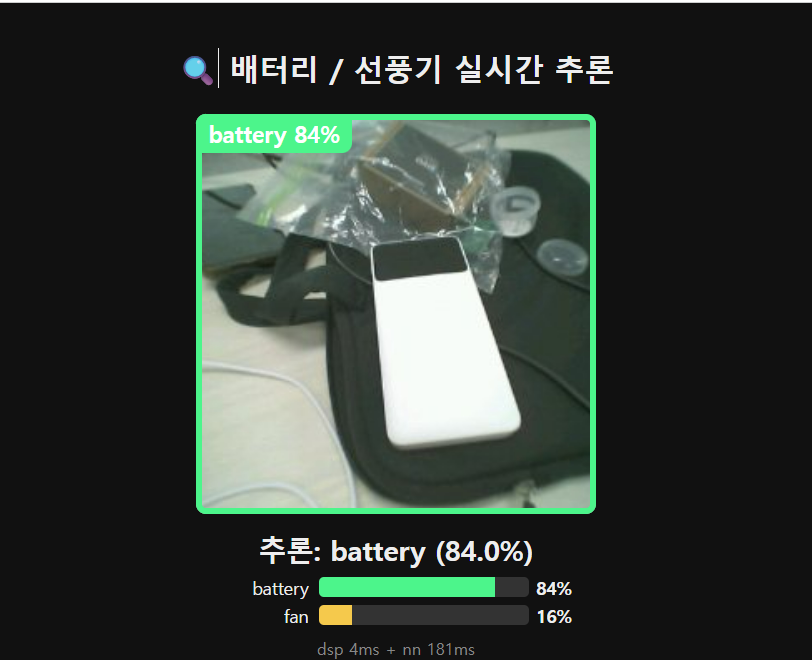
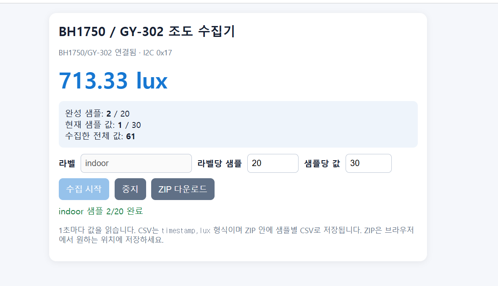

수집
COLLECT
카메라 프레임과 1초 단위 조도 값을 브라우저에서 모은다.
XIAO ESP32-S3 Sense로 카메라와 I²C 센서를 연결하고, 브라우저에서 수집한 데이터를 현장 추론으로 이어 본 오늘의 기록.
오늘의 실습은 부품을 연결하는 데서 끝나지 않는다. 원시 신호를 라벨이 있는 데이터로 바꾸고, 다시 현장에서 쓸 수 있는 판단으로 돌려보내는 과정이다.
카메라 프레임과 1초 단위 조도 값을 브라우저에서 모은다.
이미지 크기, 샘플 수, 라벨 균형이 모델이 보는 세계를 만든다.
보드 위에서 새 입력을 읽고, confidence와 함께 판단한다.
카메라는 장면을 보고, I²C 센서는 환경을 읽는다. 둘 다 같은 보드에서 네트워크와 데이터 파이프라인을 만난다.
배터리 / 선풍기
96 × 96 image classification
bkh · 192.168.4.1
수집과 ZIP 다운로드
BH1750 조도 · BME280 기압/습도
BNO055 방향/자세
이미지 / 시계열 데이터
학습 → Arduino library
Edge Impulse는 버튼 한 번으로 결과를 만드는 마법이 아니라, 데이터를 모델로 바꾸고 다시 디바이스에 넣는 작업 공간이다.
이미지·CSV를 라벨과 함께 업로드한다.
입력 크기와 DSP·학습 블록을 정한다.
모델이 볼 수 있는 숫자 표현으로 바꾼다.
validation과 test 결과를 분리해 확인한다.
Arduino library로 보드 안에 넣는다.
센서와 카메라를 읽고, 네트워크를 만들고, 추론까지 수행한다. 그래서 실습 보드가 곧 서비스의 실행 장치가 된다.
공유기 없이 핫스팟이 되거나 기존 공유기에 접속한다.
근거리 무선 장치와 데이터를 주고받는다.
Sense 보드의 카메라와 큰 버퍼를 활용한다.
D4·D5 버스로 여러 센서를 연결한다.
115200 baud로 부팅과 센서 상태를 확인한다.
클라우드가 없어도 보드에서 분류를 실행한다.
보드가 웹 서버가 되면 앱을 따로 설치하지 않아도 된다. 휴대폰 브라우저가 수집기·모니터·다운로더가 된다.
http://192.168.4.1STANDALONE ACCESS POINT · LOCAL SERVICE휴대폰을 AP에 연결하고 주소 한 줄을 연다.
보드와 휴대폰이 같은 로컬 네트워크에서 통신한다.
카메라 프레임, 라벨, confidence를 바로 확인한다.
갤러리의 사진·CSV를 Edge Impulse용 파일로 내보낸다.
카메라 모델의 첫 번째 성능은 모델 구조가 아니라 데이터가 어떤 장면을 대표하는지에서 결정된다.

검증 정확도 100%는 인상적이지만, 실제 배포 포맷으로 바뀐 순간의 성능까지 확인해야 한다.
양자화된 int8 모델은 새 카메라 이미지에서도 충분히 안정적인가? 리포트도 “새 이미지로 평가한 뒤 신뢰하라”고 말한다.
휴대폰 브라우저로 보드에 접속하면, XIAO Sense 카메라의 장면과 AI 판단을 실시간으로 확인할 수 있다.
AP에 연결한 뒤 http://192.168.4.1을 열면 별도 앱 없이 서비스 화면이 나타난다.
센서가 많아질수록 먼저 확인할 것은 드라이버가 아니라 배선, 핀, 주소다. 한 번의 스캔이 다음 디버깅을 줄인다.
0x230x760x29공통 기준: Wire.begin(D4, D5) · 3V3 · GND. 주소가 겹치지 않는 한 같은 버스에 센서를 함께 연결할 수 있다.
BH1750은 1초마다 읽은 값을 30개씩 묶어 하나의 시계열 샘플로 만든다. 브라우저가 수집 도구이자 ZIP 생성기다.

숫자가 출력된다고 센서가 제대로 읽힌 것은 아니다. 주소·칩 ID·변환 대기 시간까지 확인해야 데이터가 의미를 갖는다.
전체 I²C 주소를 스캔하고 실제 응답 주소를 기록한다. 후보 이름만 믿지 않는다.
0x76이면 CHIP_ID를 읽는다. 0x60은 BME280, 0x58은 BMP280이다.
BH1750은 시작 뒤 약 120–200ms를 기다린다. 첫 0 lux를 배선 고장으로 단정하지 않는다.
사람이 손으로 가려야 하는 변화는 자동 점수가 아니라 manual check로 남긴다.
이미지와 시계열은 서로 다른 모양의 문제지만, 좋은 데이터 파이프라인에 필요한 질문은 같다.
같은 “분류”라도 입력의 구조와 배포 포맷이 바뀌면 다시 검증해야 한다.
부품과 모델이 바뀌어도 순서는 크게 달라지지 않는다. 기록이 남는 순서로 반복하면 디버깅이 빨라진다.
3V3 / GND
D4 SDA · D5 SCL
주소와 CHIP_ID
시리얼 확인
AP에서 라벨 입력
CSV / ZIP 생성
샘플 균형
배포 포맷 평가
새 입력과 latency
다시 확인
Wi-Fi: bkh → http://192.168.4.1Wire.begin(D4, D5) → scan → read오늘은 보드가 보고, 듣고, 읽은 신호를 학습 가능한 형태로 바꾸는 연습을 했다. 다음 질문은 이제 우리 차례다.
수집한 한 줄의 데이터가
현장의 한 번의 판단이 된다.